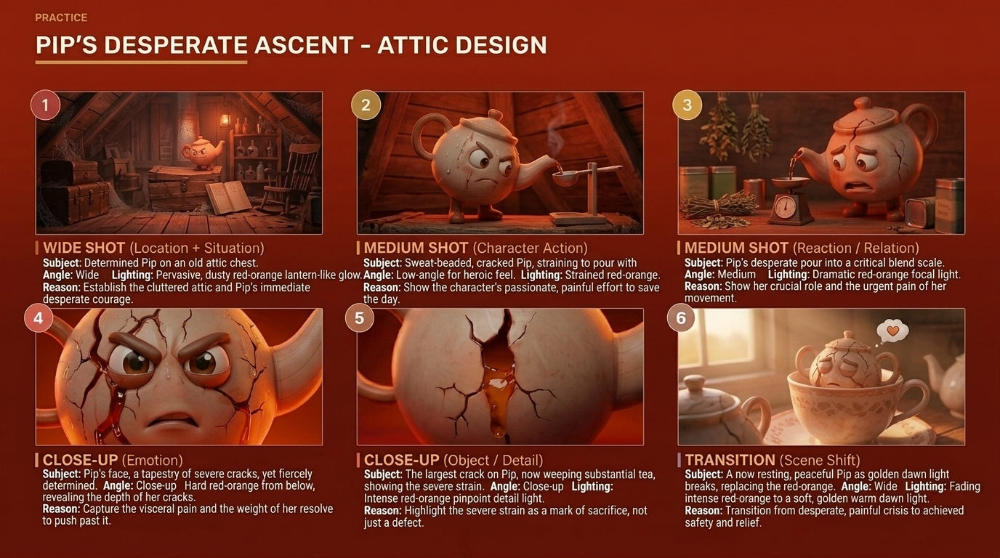

Blockout
Start with a sphere-led body, separate spout and handle curves, simple feet, and a removable lid. Check front and profile silhouette before detail.
Project 05 · Character & production visualization
A warm, expressive ceramic teapot designed to carry eighty-seven years of service, one visible fracture, and a hopeful transformation into a production-ready silhouette.

Pip is an 87-year-old ceramic teapot with a cheerful painted face, gentle steam, and the posture of someone who has spent a lifetime helping others. Her rounded body reads as safe and familiar; small feet and oversized eyes keep the silhouette expressive at storyboard scale.
Soft peach handles and spout contrast with an ivory ceramic body. Fine gold seams and growing leaves turn repair into identity. The face stays simple so subtle changes in brows, lids, and mouth shape can carry shame, fear, courage, and joy.
Front, three-quarter, profile, and rear views establish handle depth, spout taper, lid proportion, foot placement, crack continuity, and foliage position. This gives a 3D artist consistent cues before blockout begins.
The reference supports Blender blockout, clean silhouette checks, ceramic material studies, golden-crack emissive detail, leaf set dressing, and soft studio lighting. The images are presented as production targets rather than a claim of a finished game asset.
Character gallery
Turnarounds and story panels keep Pip recognizable while testing age, emotion, and the meaning of repair.


Blender-ready planning
A concise path from reference sheet to modeled, dressed, and lit scene.
Start with a sphere-led body, separate spout and handle curves, simple feet, and a removable lid. Check front and profile silhouette before detail.
Use a glazed ceramic base, subtle roughness variation, and a controlled gold inlay path. Keep the crack legible without making the surface noisy.
Support scale and story with a small watering can, miniature teapot, leaves, and sprout. Each prop reinforces care, memory, and renewal.
Use a broad warm key and soft green environment fill for the healed version; preserve a brighter edge on the gold seam so the theme reads immediately.